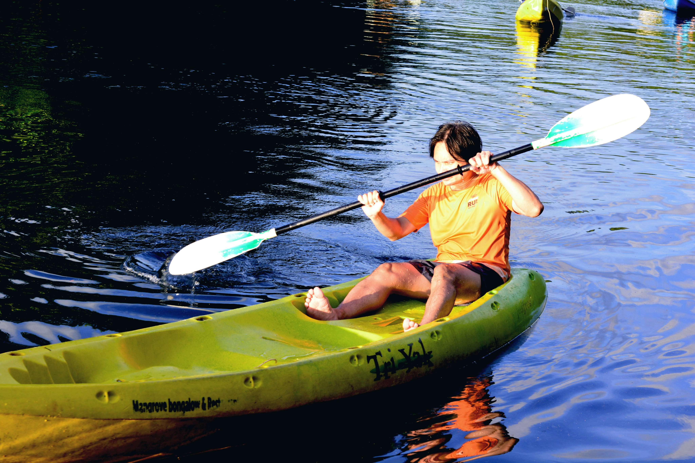
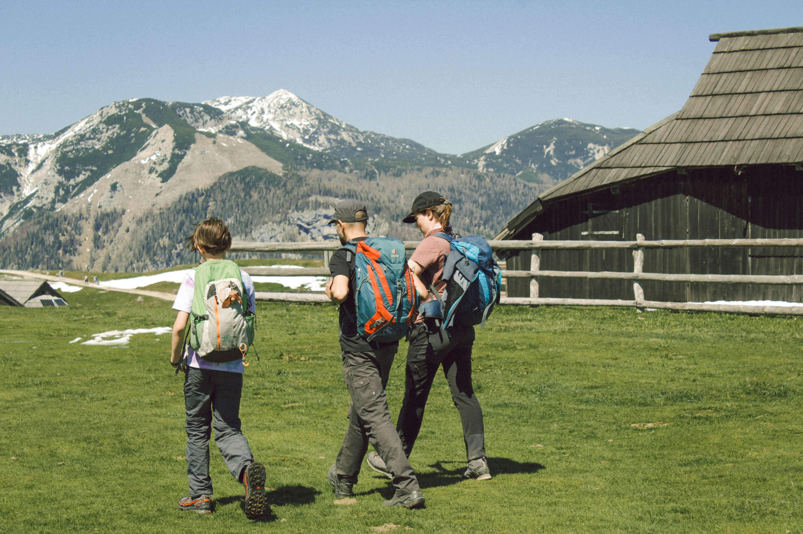
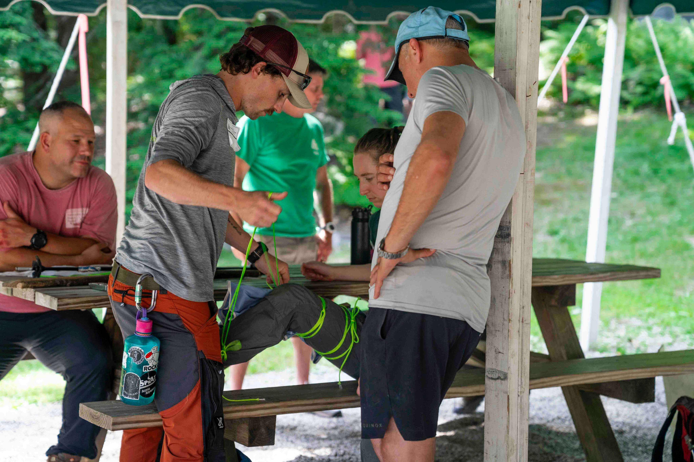
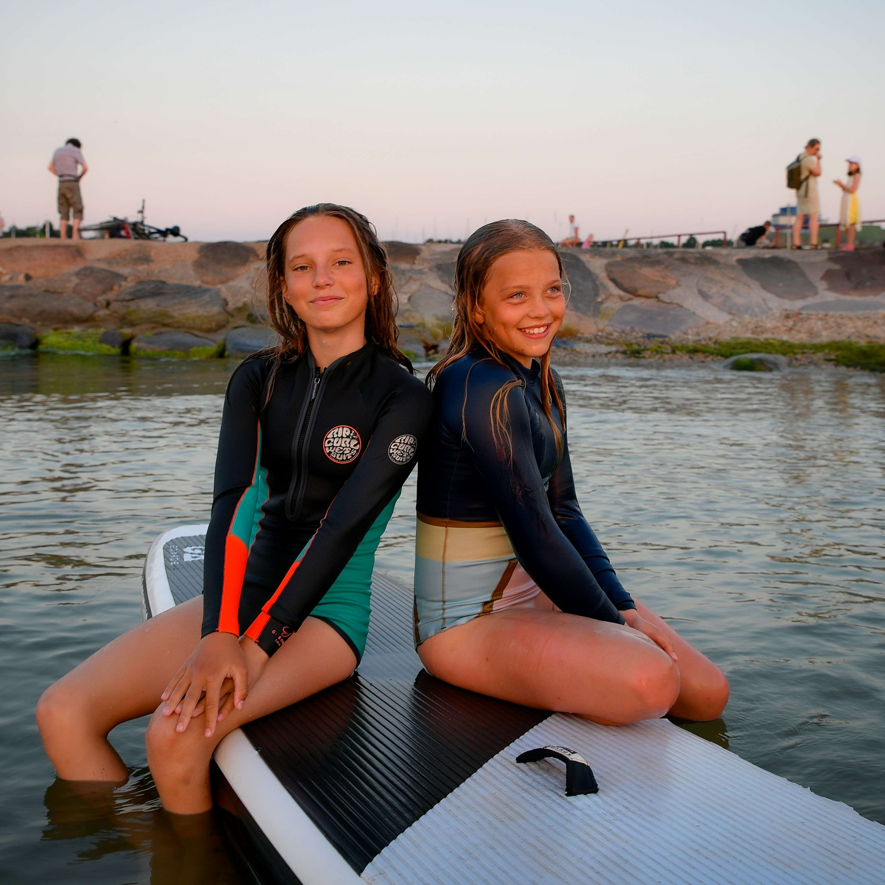
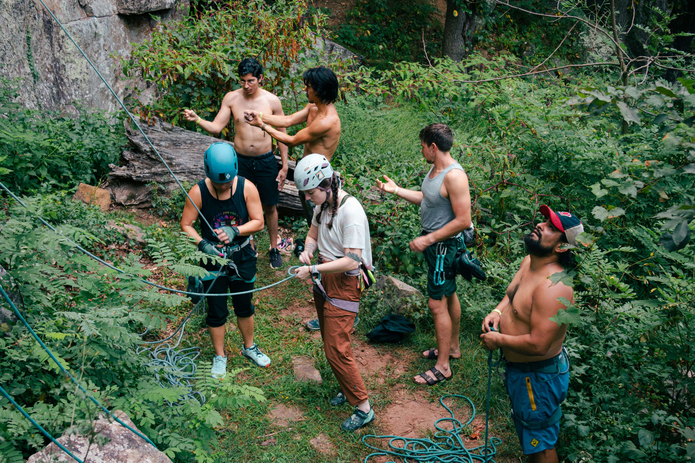
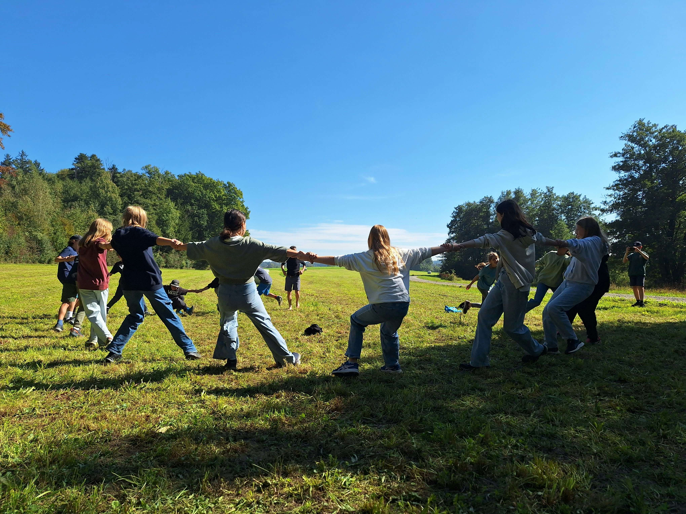
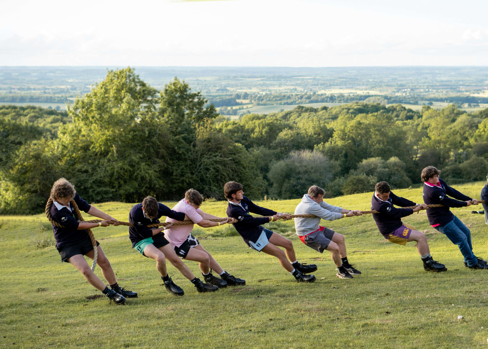
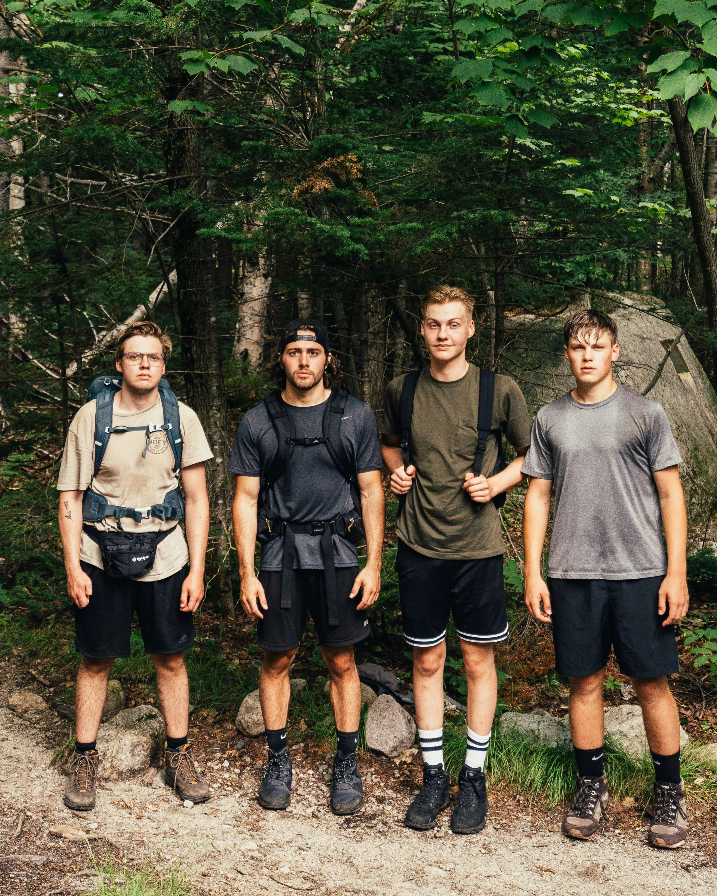
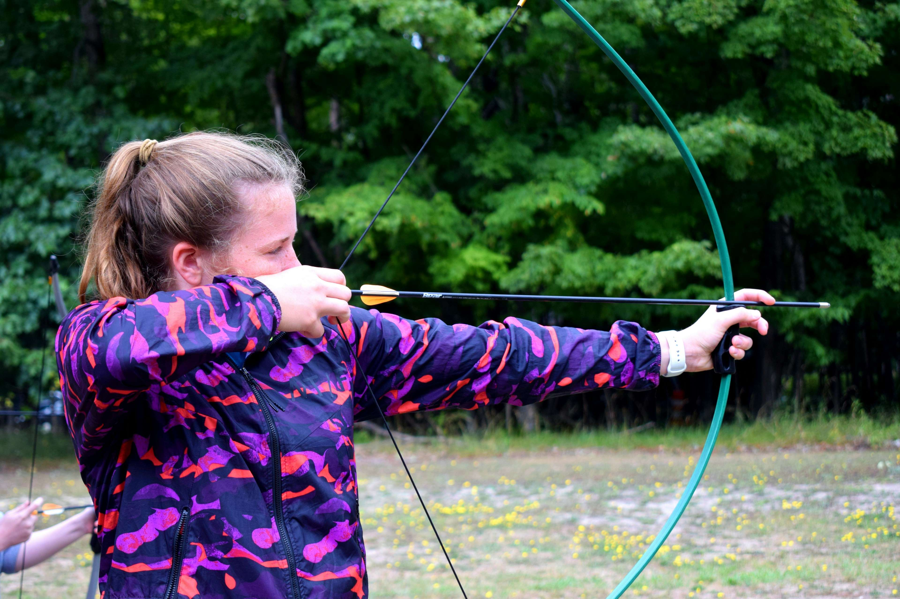

Lochquarry Outdoor Centre provides exciting outdoor activities for young people aged 6 to 18. Our activities are split into three categories: land-based, water-based and rope-based, so there is something for every age and every level of confidence. We have recently expanded the range of activities we offer, which means there are now more ways than ever to try something new, build confidence and have fun in the outdoors.
We already welcome many youth groups, such as Scouts and Guides, during evenings and weekends. We now have availability during the week and would love to welcome school groups too. A visit to Lochquarry is a great way for pupils to learn new skills, work as a team and enjoy time outdoors together.








